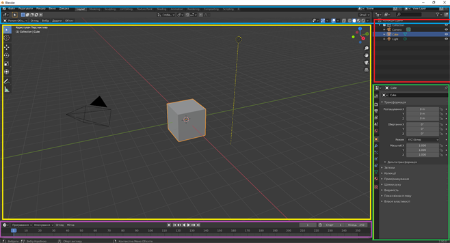
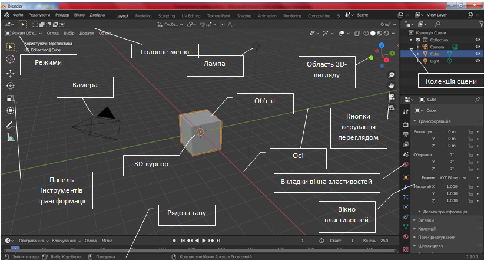
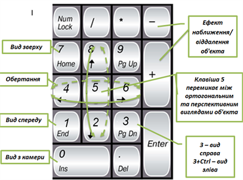
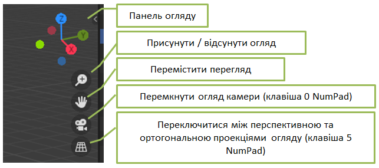
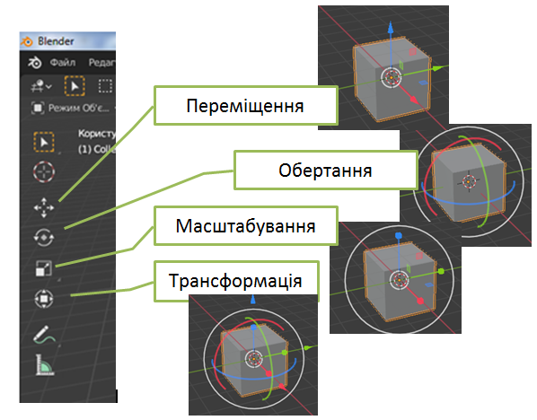

Основу інтерфейсу складають горизонтальні вкладки (робочі простори), кожна з яких відведена під певну категорію функцій, що дозволяє легко перемикатися між різними завданнями, забезпечуючи різні дії над 3D моделями в одному вікні. Праворуч у кожній вкладці містяться панелі інструментів, які мають власні вкладки, розташовані вертикально. Практично кожна функція має відповідне їй поєднання клавіш, і враховуючи кількість наданих можливостей у Blender, кожна клавіша включена в більш ніж одне поєднання (shortcut). З того часу як Blender став проєктом з відкритим вихідним кодом, було додано повні контекстні меню до усіх функцій, а використання інструментів зроблене логічнішим та гнучкішим. Користувацький інтерфейс підтримує колірні схеми оформлення, прозорі плаваючі елементи, які розширюють функціональність Blender-а. До окремих об'єктів і навіть їхніх полігонів можна прикріплювати нотатки.
Вікно програми Blender складється з 5 областей.
Info Editor (інформаційний редактор) — синій колір.
3D View (3D-вигляд сцени) — жовтий колір. У цій області ми бачимо сітку, призначену для орієнтації у просторі.
Timeline (часова шкала) — фіолетовий колір.
Outliner (редактор проекта) — червоний колір. В цій області об'єкти сцени можна виділяти, змінювати назви, видимість, сортувати по колекціях тощо.
Properties editor (редактор властивостей) — зелений колір.
У головному вікні ми бачимо сцену, що складається з куба, лампи і камери (вид зверху). Куб — це стандартний меш-об'єкт. Лампа створена, щоб висвітлити сцену. Камера — це точка зору користувача, і потрібна для того, щоб було звідки дивитися на сцену.
Mesh-об'єкти є одним з типів об'єктів Blender. Mesh-об'єкти також називають сітками, полісітками. Це тривимірні геометричні примітиви, змінюючи які за допомогою базових трансформацій та інших модифікаторів, створюють інші, зазвичай більш складні, фігури.
Керувати виглядом об'єкта можна за допомогою клавіш цифрової клавіатури:
Навігація в 3D-вікні здійснюється мишкою і кнопками NumPad (Додаткової цифрової клавіатурі).
Мишка виконує велику кількість функцій. Лівою Кнопкою Миші (ЛКМ) можна переміщати 3D-курсор, розтягувати вікна і виділяти об'єкти. Розташування 3D-курсора визначає місце створення нових об'єктів. Права кнопка використовується для вибору об'єктів або вершин (в режимі редагування). Коліщатко миші служить двом цілям. Прокрутка збільшує або зменшує масштаб відображення (як і клавіші "+" і "–" на цифровій клавіатурі). Натиснувши на коліщатко, можна обертати вид відображення. А утримування коліщатка в поєднанні з Shift дозволить панорамувати (Рухати) вид зображення.
Для роботи з об'єктом його треба виділити (клікнути по ньому лівою кнопкою миші). При виділенні об'єкта його межі зафарбовуються помаранчевим кольором.
Щоб роздивлятися об’єкт з різних боків, крутити сцену, треба переміщати мишу, тримаючи коліщатко миші затиснутим.
Щоб переміщатися по сцені, необхідно переміщувати мишу, тримаючи затиснутими одночасно клавішу SHIFT та коліщатко миші.
Для перегляду сцени спереду/позаду, зверху/знизу, справа/зліва можна використовувати кнопки панелі Огляд — Точка зору.
У Blender в Об'єктному Режимі використовуться три основних способи модифікації:
Клавіша 'R' — Обертання виділених об'єктів або вершин.
Клавіша 'S'— Масштабування виділених об'єктів або вершин.
Клавіша 'G' — Переміщення виділених об'єктів або вершин.
Щоб застосувати ці модифікації з точними значеннями параметрів (наприклад, повернути об'єкт по осі Х на 90° або змінити розмір на точне число одиниць), можна натисканням клавіші «N» викликати Цифрове вікно (Властивості Трансформації).
Якщо треба перемістити об'єкт по певної осі (X, Y, Z), введи команду руху "G" і перемісти об'єкт в сторону потрібної осі. затисни коліщатко мишки (не крути його, просто натисни як кнопку). Це обмежить переміщення об'єкта по певній осі. При переміщенні об'єктів також можна користуватися клавішами X, Y, Z.
Замість використання команд R, S і G можна вибрати потрібний інструмент на Панелі інструментів трансформації і просто указати вісь, яку треба використати.
